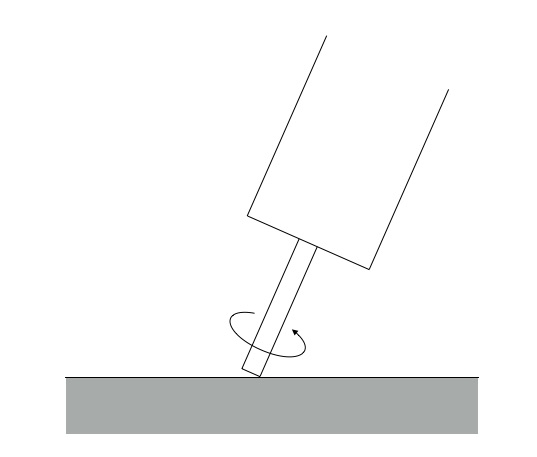
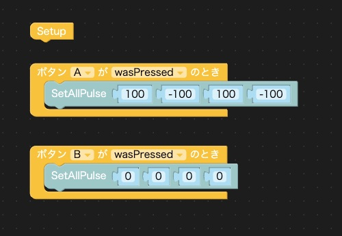
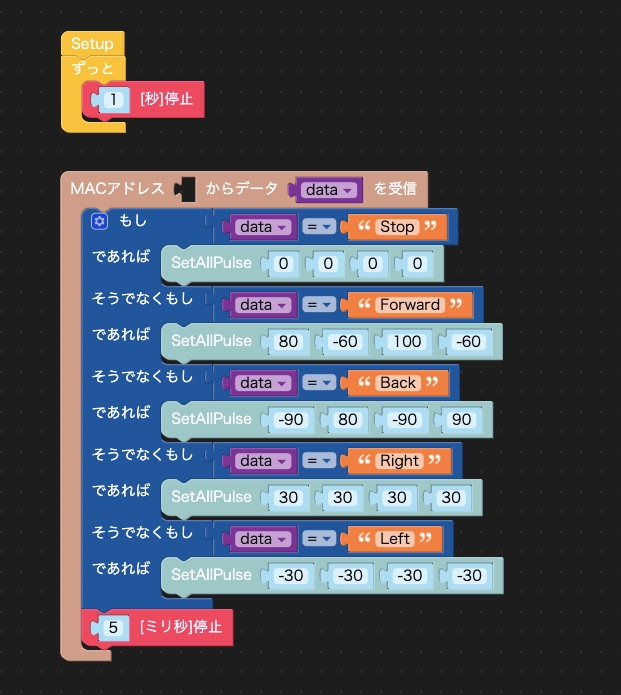
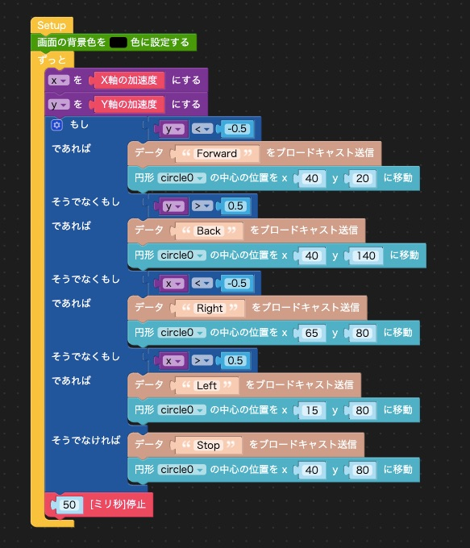

M5Stack社の製品にまつわる新情報をまとめてお届けする「M5Stackマンスリーアップデート」のコーナーです。
2020年5月に新販売になった製品はありませんでしたので、今月は4月の製品の中から、BugCという小型ロボットを紹介します。 最初に、5月号のATOMの記事の補足です。
5月号のM5ATOMの紹介記事の中の「Arduinoでのプログラミング」で、「LEDDisplay」というサンプルプログラムが何も表示しなかったと書きました。 調べた結果、M5ATOMのライブラリのバグでした。ライブラリのソースコードが公開されているGithubサイトにこのバグの対処方法が公開されていました。
バグがあったのは LED_DisPlay.cpp というライブラリです。ArduinoのライブラリはArduino IDEの「環境設定」の「スケッチブックの保存場所」で指定しているフォルダの libraries にあり、 LED_DisPlay.cpp は以下の場所にあります。
/スケッチブックの保存場所/libraries/M5Atom/src/utility/LED_DisPlay.cpp
このファイルの103行目を次のように修正すると、バグが修正できます。
修正前
xSemaphoreTake(_xSemaphore, portMAX_DELAY);
修正後
xSemaphoreTake(_xSemaphore, 100);
ライブラリを修正してビルドし、サンプルプログラムを動かしたところ、ATOMのLEDマトリックスに「ATOM」という文字が左にスクロールして表示されました。
4月にはRoverC、PuppyC、BugCという3種類の小型ロボットが発売されました。 3種類ともM5StickCで制御します（製品にはM5StickCは含まれておらず、別途購入する必要があります）。 RoverCはメカナムホイールを搭載して前後左右、斜めと全方向に移動できるロボット、PuppyCは4つのサーボモーターで駆動する脚がついていて、前後に移動できるロボットです。 BugCはとてもユニークな移動メカニズムをもった小さなロボットです。
BugCには写真のように4つの小さなモーターが少し外側に向けてついていて、モーターの軸が床などの面に斜めに接しています。モーターはM5StickCで制御して回転させますが、どちらにも回すことができます。モーターを図のような向きに回転させたとき、この脚は画面の点前から奥に向かって移動します。

4つのモーターを図のように回すことで、前進、後退、その場で回転といった動作ができます。
BugCの前進後退・回転
BugCはM5StickCを接続し、I2Cで制御します。ArduinoでもUI Flowでもプログラミングでき、それぞれのサンプルプログラムがついています。ArduinoのサンプルプログラムはAボタンを押すと後退し、Bボタンを押すと止まるという簡単なものです。UI Flowのサンプルプログラムは2台のM5StickCを使い、1台でBugCを制御し、もう1台にジョイスティックをつけてコントローラーにして、BugCをリモート制御するものです。
Arduinoのサンプルプログラムを参考に、UI FlowでAボタンを押すと前進し、Bボタンを押すと止まるプログラムを作りました。

動かしてみると、BugCは左前の方にカーブして進んでしまいました。プログラムとしては4つのモーターを同じ速度で回転させていますが、重さのバランスなどで床に伝わる推進力が同じにならず、直進しないのだと思います。4つのモーターの速度をいろいろと調整しましたが、まっすぐに前進・後退させることはできませんでした。
その場で回転するのは右回転も左回転もほぼ同じ場所で回転しました。
まっすぐ進まないのはBugCの個性だと諦めて、次はもう1台のM5StickCでコントロールしてみます。
サンプルプログラムではジョイスティックHatを使っているのですが、手元にジョイスティックHatがなかったので、M5StickCを傾けて、傾きを加速度センサで検知してBugCをコントロールしました。
どちらもUI Flowでプログラミングしました。BugC側のプログラムは次のような感じです。

コントローラ側は次のような感じです。

コントローラとBugCの通信にはEspNowという通信方法を使っています。詳細は省きますが、EspNowはWi-Fiパケットを使って非常に高速な通信ができ、このような小型ロボットの制御などには適しています。
M5StickCを傾けてBugCをコントロールしている様子は次の動画をご覧ください。